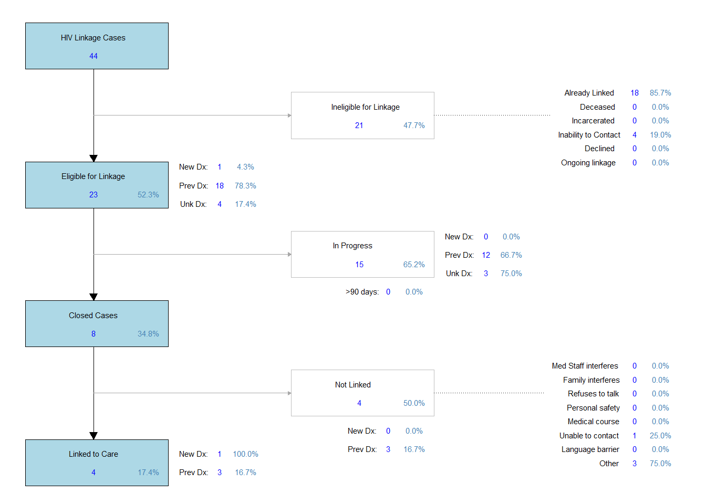

| CTR | |
|---|---|
| Number of Tests | 256 |
| Positives | 1 |
| New Positives | 1 |
| Positivity Rate | 0.39% |
CTR Deliverables (2024/2025)
CTR Program
The Counseling, Testing, and Referral to treatment (CTR) testing program…(plan to provide an overall description and background for CTR)
CTR testing is reported on a monthly basis. There are different reports required to the local health department, Hamilton County Public Health (HCPH), and to the state health department, Ohio Department of Health (ODH). The report for HCPH is due by the 5th of the month for the prior month’s testing data. This report includes the total number of CTR-funded tests performed, how many were reactive (and then confirmed positive), and whether those positive tests were for patients newly-diagnosed or for a person known to be living with HIV. Additionally, the total number of assessments conducted, and how many individuals were tested and assessed are reported to HCPH each month for CTR. The report sent to ODH each month consists of the total number of CTR-funded tests, and how many individuals were newly diagnosed with HIV from testing. Additionally, the ODH report consists of the record-level assessment data for each negative test, only providing the ODH assessment questions. The ODH report is divided into three parts: 1) the number of tests and assessment data for all those testing negative, 2) the opscan data for all those testing negative, and 3) the supplemental opscan data for those that were tested but did not have an assessment conducted at the time of the test. The table above shows the total number of CTR tests and the overall positivity rate for the current grant period. The figure below shows the monthly CTR testing numbers for the current grant period.
The deliverables highlighted below are the numbers that were noted on the 2024 CTR Workplan as what our program would accomplish within the year of funding awarded. The data shown in the table below covers the CTR program deliverables starting August 1st, 2024 through May 31, 2025. A summary table of the CTR deliverables, the number of each deliverable achieved, and the percent of the deliverables met are shown below:
| CTR Deliverable | Achieved | Goal | % |
|---|---|---|---|
| PLWHA | |||
| PLWHA not in care | 23 | 125 | 18.4% |
| PLWHA at UCMC | 15 | 80 | 18.8% |
| PLWHA at WCH | 1 | 10 | 10.0% |
| PLWHA at the Exchange | 1 | 5 | 20.0% |
| PLWHA at Talbert | 0 | 5 | 0.0% |
| PLWHA/WOC | 2 | 10 | 20.0% |
| PLWHA/Youth | 5 | 25 | 20.0% |
| PLWHA/IDU | 3 | 30 | 10.0% |
| % PLWHA linked | 17.4% | 80% | |
| MSM | |||
| MSM assessed | 21 | 150 | 14.0% |
| MSM tested | 10 | 100 | 10.0% |
| MSM tested at UCMC | 10 | 75 | 13.3% |
| MSM tested at WCH | 0 | 5 | 0.0% |
| MSM tested at the Exchange | 0 | 10 | 0.0% |
| MSM tested at Talbert | 0 | 5 | 0.0% |
| MSM/Youth tested | 4 | 25 | 16.0% |
| MSM/IDU tested | 0 | 25 | 0.0% |
| MSM new positive | 0 | 3 | 0.0% |
| HRHS | |||
| HRHS assessed | 70 | 1150 | 6.1% |
| HRHS tested | 53 | 800 | 6.6% |
| HRHS tested at UC | 39 | 550 | 7.1% |
| HRHS tested at WCH | 1 | 50 | 2.0% |
| HRHS tested at the Exchange | 7 | 150 | 4.7% |
| HRHS tested at Talbert | 2 | 100 | 2.0% |
| HRHS/WOC tested | 13 | 130 | 10.0% |
| HRHS/Youth tested | 25 | 200 | 12.5% |
| HRHS/IDU tested | 10 | 300 | 3.3% |
| HRHS new positive | 1 | 9 | 11.1% |
PLWHA
The first impact objective encompasses population-based objectives centered around people living with HIV/AIDS (PLWHA) that are identified not to be in care. This objective has EIP staff identify those either newly diagnosed or previously diagnosed with HIV and determine whether they are currently out of care, requiring linkage to care services. This objective is inclusive of those who are women of color (WOC), youth (15-29 years old), and injection drug users (IDU). The statement for the actual deliverables promised for this objective is noted below:
- By May 31, 2025, EIP will perform 125 risk assessments on PLWHA not in care (newly and previously diagnosed) and provide Prevention with Positives and Linkage to Care services such that 80% are engaged in HIV medical care, inclusive of the following (80 at UCMC site, 10 at WCH site, 5 at the Exchange site, 5 at the Talbert House facility site; of which will be 10 WOC, 25 Youth (18-29), and 30 IDU) as prioritized by RFP workplan table
From this statement, we specifically state deliverables for how many PLWHA who are out of care that will be identified by our program, and successfully link 80% of those individuals to care. Additional metrics were noted in this section, but no specific details on the numbers for those metrics were provided. Therefore, we stated we would monitor and report those as needed. These metrics are shown in the table under ‘Additional Metrics’.
PLWHA are identified in several different ways within the program, including: self-report of a prior positive test during the assessment of HIV testing history, reason for offering an HIV test was due to a prior HIV positive result, declining an HIV test due to prior positive result, a final positive result through HIV testing, or having an HIV linkage case open with a new or previous HIV status. EIP staff are meant to identify all PLWHA encountered through the program, with further follow-up and discussion meant to determine who is currently out of care. The deliverable for all PLWHA identified out of care are those that are “eligible” to be linked to care within the linkage flow process (diagrammed below). They are considered “ineligible” based on the following criteria: they are already linked to care, they are deceased, they are currently incarcerated, we do not have accurate contact information to follow-up with them, they already have an ongoing linkage case for HIV within the program, or they declined EIP linkage services. These situations are determined “ineligible” linkage cases because of the significant level of barriers our program faces in certain situations, or because they cannot be realistically linked through our linkage process. While it is possible for our team to link individuals to care in some of these cases, as a whole they are termed “ineligible” due to the complexity of their situation. The numbers provided here are based on the total number of encounters, not unique number of patients, because EIP may encounter individuals frequently throughout the reporting period and identify them as being out of care during any of these encounters.
The total number of HIV linkage to care (LTC) cases initiated for PLWHA during this time period is 44, with the total number of “eligible” LTC cases for PLWHA being 23 (52.3% of all HIV LTC cases initiated, 23/44). Therefore, EIP has identified 23 PLWHA for the CTR deliverable, which is 18.4% of the total promise of 125. The total number of these “eligible” HIV LTC cases that have been successfully linked to care is 4, which is 17.4% of those “eligible” (4/23).
We do not separate linkage numbers based on the HIV testing program (CTR/EHE), so these numbers are pulled the same as the numbers that are reported for the linkage deliverables shown for the EHE program. If there are differences in the documented numbers for linkage between these two testing programs, it is likely due to the timeframe used for each program deliverable. The HIV Linkage flow diagram for the CTR deliverable timeframe is shown below to provide an understanding of where the linkage numbers are coming from.

Additional deliverables were made for identifying PLWHA at specific sites where EIP operates. For the University of Cincinnati Medical Center (UCMC), this includes only those CTR tests that were conducted within the emergency department (UCMC ED) or with admitted patients within the hospital. There were a total number of 15 PLWHA identified at UCMC, which is 18.8% of the total promise of 80. For West Chester Hospital (WCH), this includes only those CTR tests that were conducted within the emergency department (WCH ED) or with admitted patients within the hospital. There were a total number of 1 PLWHA identified at at WCH, which is 10.0% of the total promise of 10. For the community-based tests, there are only deliverables for those CTR tests conducted at the Exchange locations and Talbert locations. For the Exchange locations, this includes only those CTR tests that were conducted at any location where the Syringe Service Program (SSP) operates. There were a total number of 1 PLWHA identified at Exchange locations, which is 20.0% of the total promise of 5. For the Talbert locations, this includes only those CTR tests that were conducted at any Talbert based community site. There were a total number of 0 PLWHA identified at Talbert locations, which is 0.0% of the total promise of 5. Other community site testing is included in the total number of tests conducted, but not in these particular site-based deliverables. The bullet chart below shows the promised deliverables for each site and our current efforts toward those goals.
Finally, for this objective regarding PLWHA, the CTR program addresses particular population groups for linkage to care. EIP additionally has deliverables for those who are HIV+ and are also WOC, youth and IDU. For those who are WOC, this is defined as any individual who identifies as female whose race/ethnicity is not ‘White/Caucasian’. There were a total number of 2 PLWHA who were also WOC, which is 20.0% of the total promise of 10. For those that are considered in the youth population, CTR defines those between the age of 15-19 years old. However, EIP can encounter individuals younger than the age of 15 (although rarely), so the definition used here are those below the age of 29. There were a total number of 5 PLWHA who were also Youth, which is 20.0% of the total promise of 25. For those that are considered in the IDU population, the individual needs to complete the necessary section within the EIP assessment. We define those who endorse injection drug use behavior ever in their lifetime on the NIDA-Modified ASSIST, or those who are HIV positive and their associated risk was injection drug use as a part of the IDU population. There were a total number of 3 PLWHA who were also IDU, which is 10.0% of the total promise of 30.
For the mid-year and end-of-year reports to HCPH for linkage numbers, we report the total number of PLWHA that were out of care, whether newly diagnosed or previously known to be positive. The report independently notes the total number of PLWHA who were new diagnoses or previous diagnoses, and the total. This report also determines the number of cases currently in progress (broken down by new/previous/total), and the number of cases successfully closed (broken down by new/previous/total). For those cases that were closed, we report the total number that were successfully linked to care (broken down by new/previous/total) and the number that were not linked to care (broken down by new/previous/total). The table belows shows how these numbers are reported to HCPH at the mid-year and end-of-year reports.
| New Dx # | New Dx % | Previous Dx # | Previous Dx % | Total # | Total % | |
|---|---|---|---|---|---|---|
| # PLWHA Out of Care | 1 | 18 | 23 | |||
| Cases in Progress | 0 | 0.0% | 12 | 66.7% | 15 | 65.2% |
| Cases Closed | 1 | 12.5% | 6 | 75.0% | 8 | 34.8% |
| Linked to Care | 1 | 100.0% | 3 | 16.7% | 4 | 17.4% |
| Not Linked to Care | 0 | 0.0% | 3 | 16.7% | 4 | 50.0% |
Any discrepancies in the total numbers compared to the individual new/previous numbers is likely due to the situation when the HIV status in a linkage case has not yet been determined as a new diagnosis or a previous diagnosis.
MSM
There were additional deliverables made for population-based objectives, and the first focuses on those who identify as men who have sex with other men (MSM). Individuals are only identified as a part of this population group if they complete the necessary portions on the EIP assessment. The statement for the actual deliverables promised for this objective is noted below:
- By May 31, 2025, EIP will identify 150 MSM for risk-assessment and prevention intervention including client-centered risk reduction counseling and PrEP education/referral. EIP will provide CTR testing to 100 MSM, inclusive of the following (75 at UCMC site, 5 at WCH site, 10 at the Exchange site, 5 at the Talbert House facility site; of which will be 25 Youth (15-29) and 25 IDU). Of the 150 MSM tested, EIP will identify between 3-5 HIV(+) MSM for the PLWHA program (Workplan Form 4, Part 1).
From this statement, we specifically state deliverables for how many MSM will be assessed for risk and/or need, and how many MSM will be tested using CTR-funded tests. Additionally, EIP states a specific number of tests at each site (UCMC, WCH, the Exchange, and Talbert). EIP also states how many MSM will be tested using CTR-funded tests who are also youth (15-29) and injection drug users (IDU), as well as a specific number of newly diagnosed individuals who identify as MSM. Additional metrics were noted in this section, but no specific details on the numbers for those metrics were provided. Therefore, we stated we would monitor and report those as needed. These metrics are shown in the table under ‘Additional Metrics’.
For those individuals who identify as a male, they are determined to be a MSM if they meet at least one of the following criteria: they identify as Male and their sexual orientation is homosexual or bisexual, they report sex with a male or a transgender male within the past year, or they are a PLWHA and their reported risk was MSM. The total number of individuals who are MSM that have been assessed during this time period is 21, which is 14.0% of the total promise of 150.
The total number of individuals who are MSM that have been tested through the CTR program is 10, which is 10.0% of the total promise of 100. In addition to the total number of tests, there were deliverables for the location where those tests were conducted. For the University of Cincinnati Medical Center (UCMC), this includes only those CTR tests that were conducted within the emergency department (UCMC ED) or with admitted patients within the hospital. There were a total number of 10 CTR tests that were conducted at UCMC, which is 13.3% of the total promise of 75. For West Chester Hospital (WCH), this includes only those CTR tests that were conducted within the emergency department (WCH ED) or with admitted patients within the hospital. There were a total number of 0 CTR tests that were conducted at WCH, which is 0.0% of the total promise of 5. For the community-based tests, there are only deliverables for those CTR tests conducted at the Exchange locations and Talbert locations. For the Exchange locations, this includes only those CTR tests that were conducted at any location where the Syringe Service Program (SSP) operates. There were a total number of 0 CTR tests that were conducted at Exchange locations, which is 0.0% of the total promise of 10. For the Talbert locations, this includes only those CTR tests that were conducted at any Talbert based community site. There were a total number of 0 CTR tests that were conducted at Talbert locations, which is 0.0% of the total promise of 5. Other community site testing is included in the total number of tests conducted, but not in these particular site-based deliverables. The bullet chart below shows the promised deliverables for each site and our current efforts toward those goals.
While we do not separate the linkage data between the various testing programs, we can identify which testing programs identify new positive HIV diagnoses. According to the CTR workplan, EIP has promised to identify a certain number of individuals who identify as MSM who are newly diagnosed for HIV. There were a total number of 0 MSM CTR tests that resulted in a new positive diagnosis for the individual tested, which is 0.0% of the total promise of 3. This number of new positive diagnoses are only those that were tested through the CTR program, and this only considers new positive diagnoses, not those that were tested and later determined to be an individual known to be positive.
This can be further broken down monthly to determine how frequently we test those who identify as MSM, and determine if program evaluation needs to occur based on how we can increase testing for this population or whether decreased testing numbers are due to staffing changes and program barriers. The monthly breakdown of MSM CTR testing by month is shown here.
Finally, the CTR program addresses particular population groups for testing. Within the population of MSM, we additionally have deliverables for youth and IDU. For those that are considered in the youth population, CTR defines those between the age of 15-19 years old. However, EIP often encounters individuals younger than the age of 15, so the definition used here are those below the age of 29. There were a total number of 4 CTR tests where the individual was both MSM/Youth, which is 16.0% of the total promise of 25. For those that are considered in the IDU population, the individual needs to complete the necessary section within the EIP assessment. We define those who endorse injection drug use behavior ever in their lifetime on the NIDA-Modified ASSIST, or those who are HIV positive and their risk was injection drug use as a part of the IDU population. There were a total number of 0 CTR tests where the individual was both MSM/IDU, which is 0.0% of the total promise of 25.
HRHS
There were additional deliverables made for population-based objectives, and the second focuses on those who identify as heterosexual that are at high risk for contracting HIV by endorsing high-risk heterosexual sex (HRHS) behaviors. Individuals are only identified as a part of this population group if they complete the necessary portions on the EIP assessment. The statement for the actual deliverables promised for this objective is noted below:
- By May 31, 2025, EIP will identify 1150 HRHS for risk-assessment and prevention intervention including client-centered risk reduction counseling and PrEP education/referral. EIP will provide CTR testing to 800 HRHS, inclusive of the following (550 at UCMC site, 50 at WCH site, 150 at the Exchange site, 100 at the Talbert House facility site; of which will be 130 WOC, 200 Youth (15-29), and 300 IDU). Of the 800 HRHS tested, EIP will identify 9 HIV(+) HRHS for the PLWHA program (Workplan Form 4, Part 1).
From this statement, we specifically state deliverables for how many HRHS will be assessed for risk and/or need, how many HRHS individuals will be tested through CTR-funded tests, and state a specific number of tests at each site (UCMC, WCH, the Exchange, and Talbert). Additionally, EIP stated specific populations within those who are HRHS, including WOC, youth (15-29), and IDU. EIP also stated a specific number of individuals newly diagnosed with HIV through CTR testing. Additional metrics were noted in this section, but no specific details on the numbers for those metrics were provided. Therefore, we stated we would monitor and report those as needed. These metrics are shown in the table under ‘Additional Metrics’.
For those individuals who identify as a heterosexual (men who have sex with women, or women who have sex with men), they are determined to be HRHS if they meet at least one of the following criteria: heterosexual women that have unprotected sex with men or MSM, heterosexual men/women that have sex with an IDU, an HIV positive partner, a STD positive partner, more than three partners, or heterosexual men/women that exchange money/drugs for sex. These behaviors are all within the past year.
The total number of encounters with individuals who are HRHS that have been assessed during this time period is 70, which is 6.1% of the total promise of 1150. In addition to the total number of assessments, there were deliverables for the number of CTR-funded tests performed. The total number of encounters where HRHS individuals were tested is 53, which is 6.6% of the total promise of 800.
There were also deliverables for the number of tests performed at specific sites where EIP operates. For UCMC, this includes only those assessments that were accompanied by a CTR test that were conducted within the emergency department (UCMC ED) or with admitted patients within the hospital. There were a total number of 39 CTR HRHS tests that were conducted at UCMC, which is 7.1% of the total promise of 550. For WCH, this includes only those assessments that were accompanied by a CTR test that were conducted within the emergency department (WCH ED) or with admitted patients within the hospital. There were a total number of 1 CTR HRHS assessments that were conducted at WCH, which is 2.0% of the total promise of 50. For the community-based tests, this includes those CTR-funded tests that were conducted at either the Exchange or Talbert sites. For the Exchange, this includes any site where the SSP operates. There were a total number of 7 CTR HRHS tests that were conducted at the Exchange, which is 4.7% of the total promise of 150. For the Talbert locations, this includes only those CTR tests that were conducted at any Talbert based community site. There were a total number of 2 CTR HRHS tests that were conducted at Talbert, which is 2.0% of the total promise of 100. Other community site testing is included in the total number of tests conducted, but not in these particular site-based deliverables. The bullet chart below shows the promised deliverables for each site and our current efforts toward those goals.
While we do not separate the linkage data between the various testing programs, we can identify which testing programs identify new positive HIV diagnoses. According to the CTR workplan, EIP has promised to identify a certain number of individuals that are HRHS who are newly diagnosed for HIV. There were a total number of 1 HRHS CTR tests that resulted in a new positive diagnosis for the individual tested, which is 11.1% of the total promise of 9. This number of new positive diagnoses are only those that were tested through the CTR program, and this only considers new positive diagnoses, not those that were tested and later determined to be an individual known to be positive.
This can be further broken down monthly to determine how frequently we test those who are HRHS, and determine if program evaluation needs to occur based on how we can increase testing for this population or whether decreased testing numbers are due to staffing changes and program barriers. The monthly breakdown of HRHS CTR testing by month is shown here.
Finally, the CTR program addresses particular population groups for testing. Within the population of HRHS, we additionally have deliverables for WOC, youth and IDU. For those who are WOC, this is defined as any individual who identifies as female whose race/ethnicity is not ‘White/Caucasian’. There were a total number of 13 CTR tests where the individual was both HRHS/WOC, which is 10.0% of the total promise of 130. For those that are considered in the youth population, CTR defines those between the age of 15-19 years old. However, EIP often encounters individuals younger than the age of 15, so the definition used here are those below the age of 29. There were a total number of 25 CTR tests where the individual was both HRHS/Youth, which is 12.5% of the total promise of 200. For those that are considered in the IDU population, the individual needs to complete the necessary section within the EIP assessment. We define those who endorse injection drug use behavior ever in their lifetime on the NIDA-Modified ASSIST, or those who are HIV positive and their risk was injection drug use as a part of the IDU population. There were a total number of 10 CTR tests where the individual was both HRHS/IDU, which is 3.3% of the total promise of 300.
Additional Metrics
Additional metrics still to code for:
- Number of PLWHA approached
- Number receiving intervention
- Number of interactions between EIP staff and site staff
- Number/% of PLWHA not in care (new and previous)
- Number/% of PLWHA linked to medical care and other services
- Number/% of PLWHA receiving risk assessment and counseling
- Number of MSM approached
- Number of MSM receiving intervention
- Number/% of HIV(-) MSM receiving risk reduction counseling and PrEP education/referral
- Number/% of MSM receiving HIV testing
- Number/% of MSM who test HIV+
- Number HRHS approached
- Number receiving intervention
- Number/% of HIV(-) HRHS receiving risk reduction counseling and PrEP education/referral
- Number/% of HRHS receiving HIV testing
- Number/% HRHS who test HIV+